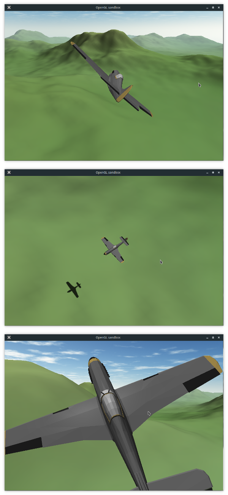

Fly
View on GitHub
A simple flight simulator in C++11/OpenGL.It uses a coherent noise to create a (practically) infinite terrain over which you can fly an airplane.
This isn't supposed to a realistic model of actual flight but I made this because making my own flight-sim seemed fun enough. (who doesn't want to make one ?)
Now with *explosions*! (using a self-rolled particle system)
Screenshots


Download
Download the sourceBuilding
External dependencies are SFML and GLEW, both of which should be available in your repositories (or from their websites).A C++14 compliant compiler is also required.
Then, compiling Fly is a matter of running cmake in the project directory and using Makefile or equivalent to compile it e.g. on Linux/macOS/BSDs:
$ git clone https://github.com/amhndu/Fly $ cd Fly $ mkdir build cd build $ cmake .. $ make -ji # where i = no. of cores you can spare
Video
Playlist on YouTubeCommand line options
usage: Fly [options...] -h | --help Print this help text and exit -w X | wX Set window width to X (default: 1024) -H Y | HY Set window height to Y (default: 720) -s Z | sZ Set seed to Z (default: random seed) -f | --fullscreen Set fullscreen mode (default: false) --wireframe Render in wireframe mode (default: false)